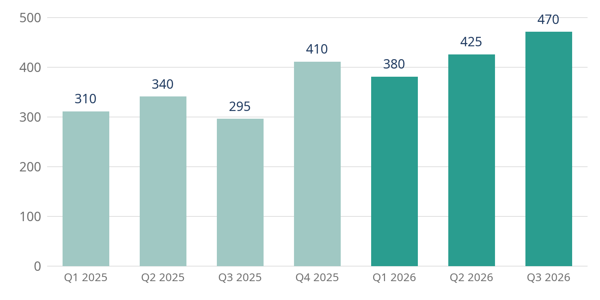
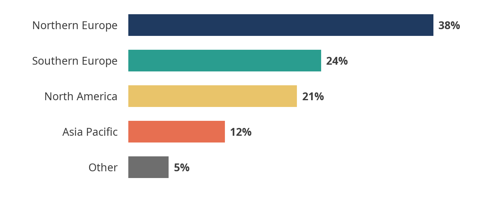

Summary
The third quarter of 2026 was the strongest in the company's history. Revenue reached € 470 million, eleven percent more than in the second quarter and fifteen percent more than a year earlier. Office furniture led the growth, helped by the new collection launched in June, while supplies grew in line with the market.
Margins held at 31 percent despite higher freight costs, because more orders shipped from the new warehouse in Rotterdam, closer to the customers in Northern Europe that account for most of the volume. Operating costs grew more slowly than revenue for the third quarter in a row.
The board is asked to approve the expansion of the Rotterdam warehouse and the opening of a sales office in Toronto, both described in the outlook at the end of this report.
Revenue
Revenue is reported by quarter and by product category. All figures are in millions of euros, excluding VAT, and the figures for earlier quarters have been restated for the move of lighting from furniture to supplies at the start of the year.
Revenue by quarter
The quarter ended with revenue of € 470 million. The seasonal dip of the third quarter, visible in 2025, did not repeat: the summer promotion moved sales forward rather than reducing them, and the new collection kept order volumes up through August.

Average order value rose to € 2,140, from € 1,980 in the second quarter, while the number of orders grew by three percent. Larger orders from existing business customers account for most of the increase.
Revenue by category
Furniture remains the largest category, at more than half of revenue. Technology grew fastest, driven by docks, monitors and headsets for offices that are bringing people back to the office for part of the week.
| Category | Q3 2025 | Q2 2026 | Q3 2026 | Change, year |
|---|---|---|---|---|
| Furniture | 158 | 221 | 247 | +56% |
| Technology | 61 | 104 | 121 | +98% |
| Supplies | 54 | 66 | 68 | +26% |
| Services | 22 | 34 | 34 | +55% |
| Total | 295 | 425 | 470 | +59% |
Services, mainly installation and office planning, were flat on the previous quarter after two quarters of strong growth, as the planning team worked at full capacity. Two planners joined in September.
Regions
Northern Europe remains the largest region, with 38 percent of revenue, followed by Southern Europe and North America. Asia Pacific is still small but doubled its revenue on a year earlier, after the partnership with a distributor in Singapore that began in March.

North America grew by 22 percent on the previous quarter. Customers in Canada now make up a third of the region's revenue, served from the warehouse in New Jersey, and the delivery times they see are the main reason for the proposal to open a sales office in Toronto.
Southern Europe was steady. The new website in Italian and Spanish went live in August, and early results show more first orders from smaller companies, which the region has historically struggled to reach.
Operations
Operations kept up with the growth in orders without a rise in late deliveries, which fell to 2.1 percent of orders from 2.8 percent in the second quarter.
Warehouses
The Rotterdam warehouse, opened in April, shipped 41 percent of European orders in its second full quarter, against 18 percent in its first. Orders shipped from Rotterdam reach customers in Scandinavia and Germany a day sooner on average, and cost eight percent less to deliver.
The warehouse is expected to reach its capacity in the second quarter of 2027. The proposed expansion adds 12,000 square metres and would be ready before then, at a cost of € 18 million.
| Warehouse | Orders shipped | On time | Cost per order |
|---|---|---|---|
| Rotterdam | 88,400 | 98.4% | € 11.20 |
| Hamburg | 71,900 | 97.6% | € 12.90 |
| Milan | 46,300 | 97.9% | € 12.40 |
| New Jersey | 52,700 | 97.1% | € 14.10 |
People
The company employed 1,240 people at the end of the quarter, 46 more than at the end of June. Most new roles are in the warehouses and in customer service, which now answers in seven languages. Staff turnover fell to nine percent a year, the lowest since 2019.
The employee survey in September had a response rate of 84 percent. Satisfaction with the working environment rose for the second year in a row; workload in the planning team was the most common concern, and is the reason for the two new planners.
Outlook
The order book for the fourth quarter is eight percent larger than a year ago, and the company expects revenue for 2026 of about € 1.7 billion. The main risks are freight costs, which rose again in September, and demand in Southern Europe, where business confidence has weakened.
The board is asked to approve two investments:
- The expansion of the Rotterdam warehouse, at a cost of € 18 million, ready in the first quarter of 2027.
- A sales office in Toronto with eight people, at a cost of € 2.4 million a year, opening in January 2027.
Together they support the plan to reach € 2 billion in revenue in 2027 while keeping delivery times in Europe under two days and bringing those in Canada under four.